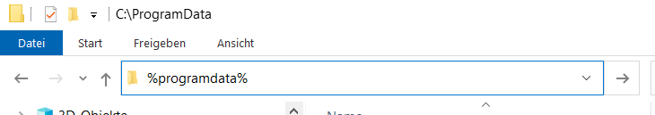
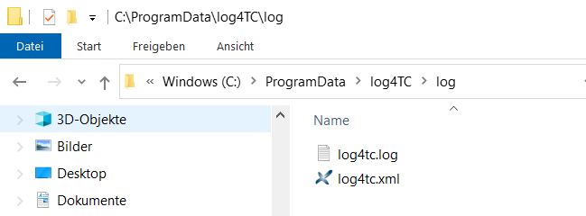
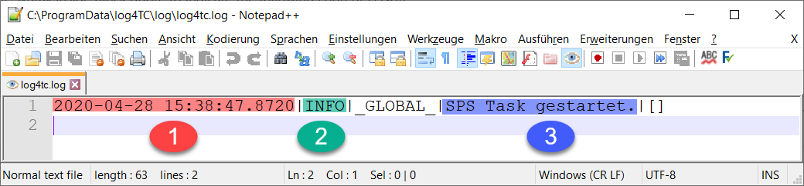

Ausgabe einer einfachen Log-Meldung
Aufruf des Loggers im MAIN
Die in der SPS erzeugten Log-Meldungen werden nicht sofort beim Aufruf eines Log-Bausteins übertragen, sondern werden zunächst in einen Task-spezifischen Puffer gespeichert. Damit diese Meldungen dann an den log4Tc-Service übertragen werden, muss in jeder Task das log4Tc aufgerufen werden.
Der Aufruf passiert mit folgenden Code, wir empfehlen diese Anweisung an das Ende jedes Bausteins anzufügen, dass von einer Task referenziert wird, in unseren Fall also im MAIN-Baustein.:
PRG_TaskLog.Call();
Ausgabe einer Log-Meldung
Im Beispiel soll eine Meldung ausgegeben werden, wenn die SPS startet. TwinCAT stellt ein Flag zur Verfügung, dass im ersten Zyklus auf TRUE gesetzt ist:
IF _TaskInfo[GETCURTASKINDEXEX()].FirstCycle THEN
// Hier soll eine Meldung ausgegebn werden
END_IF
Um eine Meldung auszugeben, muss an der markierten Stelle eine Funktion der Log4TC Library aufgerufen werden.
F_Log(E_LogLevel.eInfo, 'SPS Task gestartet.');
Hinweis: Im Beispiel wird die kurze Form für Bibliotheksaufrufe verwendet. Der Aufruf kann aber auch mit dem Namensraum erfolgen:
log4tc.F_Log(E_LogLevel.eInfo, 'SPS Task gestartet.');
Der Aufruf besteht aus zwei Parametern:
eLogLevel: Muss immer angegeben werden und definiert den Level der Log-Meldungen. Log4Tc kennt die Stufen Trace, Debug, Info, Warn, Error, Fatal. Weitergehende Informationen zu den Log-Level und ihre Bedeutung sind hier zu finden.sMessage: Gibt den Text an der geloggt werden soll.
Der MAIN-Baustein sollte wie folgt aussehen:
PROGRAM MAIN
----------------------------------------------------------------------
IF _TaskInfo[GETCURTASKINDEXEX()].FirstCycle THEN
F_Log(E_LogLevel.eInfo, 'SPS Task gestartet.');
END_IF
PRG_TaskLog.Call();
Der Code befindet sich im Beispielprojekt unter den Namen "A_SimpleLogMessage".
Ausführen des SPS-Projekts und anzeige der Meldung
Das Projekt kann es aktiviert, geladen und ausgeführt werden.
Log-Meldungen werden mit der ausgelieferten Konfiguration in das Verzeichnis %ProgramData%\log4tc\log\ abgelegt.
Tipp: In Windows ist der Ordner
%ProgramData%(entspricht normalerweise den PfadC:\ProgramData) versteckt und wird nicht im Explorer. Man kann aber den Text%programdata%als Pfad im Explorer eingeben und gelangt dann direkt zum Ordner. Alternativ können auch die Links verwendet werden, die mit der Installation von log4TC im Startmenü angelegt werden.

Im Log-Ordner befinden sich zwei Dateien, momentan geht es nur um die log4tc.log.

Die Datei log4tc.log kann mit einem normalen Texteditor geöffnet werden (siehe auch Tools):

Die Log-Meldung besteht aus mehreren Teilen, die durch ein |-Zeichen getrennt sind (Das Format einer Meldung kann über die NLog-Konfiguration fast beliebig geändert werden.).
- Zeitstempel der Meldung (SPS-Zeit) mit 100ns Auflösung (abhängig von Task-Zeit)
- Log-Level der Meldung, entspricht den ersten Input-Parameter (
E_LogLevel.eInfo) - Meldungstext
Die Erklärung der beiden übrigen Felder (_GLOBAL und []) erfolgen später.